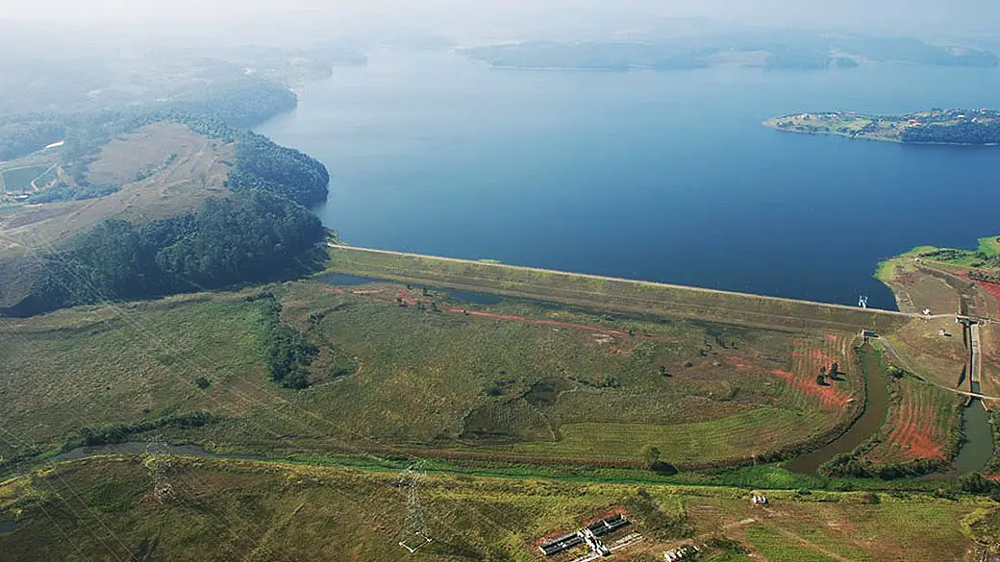

O Projeto
O Projeto tem como objetivo principal promover a formação de produtores rurais e agentes públicos municipais para o uso eficiente dos recursos hídricos. A iniciativa, coordenada pelo CONDEMAT em parceria com o Instituto Água Sustentável e financiada pelo FEHIDRO, busca fortalecer a gestão ambiental e a conservação dos mananciais por meio de oficinas teóricas e práticas, incentivo à adoção de técnicas agrícolas mais eficientes e disseminação de conhecimento técnico voltado à sustentabilidade e à proteção dos recursos hídricos da região do Alto Tietê Cabeceiras.

Ver objetivos
Municípios participantes
A ação cobre municípios estratégicos da região para ampliar práticas sustentáveis e de conservação hídrica.
Mogi das Cruzes
Salesópolis
Suzano
Paraibuna
Ribeirão Pires

Objetivos
Capacitar produtores rurais em boas práticas agrícolas.
Promover o uso sustentável da água e irrigação eficiente.
Incentivar ações de recuperação ambiental.
Fortalecer a cooperação entre municípios e instituições.
Divulgar resultados e boas práticas para replicação.
Resultados Esperados
Uso mais eficiente da água pelos produtores.
Adoção de práticas agrícolas mais sustentáveis.
Redução da pressão sobre os recursos hídricos.
Fortalecimento da gestão integrada e participativa.